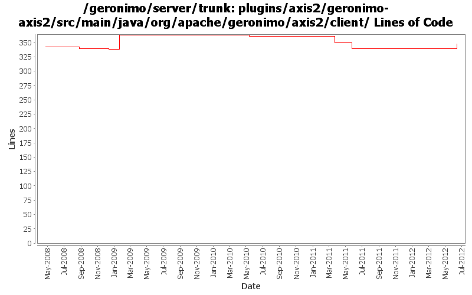

[root]/plugins/axis2/geronimo-axis2/src/main/java/org/apache/geronimo/axis2/client

| Author | Changes | Lines of Code | Lines per Change |
|---|---|---|---|
| Totals | 26 (100.0%) | 125 (100.0%) | 4.8 |
| xuhaihong | 11 (42.3%) | 70 (56.0%) | 6.3 |
| gawor | 4 (15.4%) | 41 (32.8%) | 10.2 |
| jdillon | 9 (34.6%) | 9 (7.2%) | 1.0 |
| djencks | 2 (7.7%) | 5 (4.0%) | 2.5 |
GERONIMO-6364 jaxws-catalog-tests test failed for UnknownHostExceptiion
Since Geronimo installs the whole ear as one bundle now, there may be issues while reading wsdl and jax-ws-catalog.xml file. Now the solution is that,
for WAR in EAR, as the WAR will be extracted, we will add the module directory prefix for those files, so that bundle.getEntry could work.
for EJB in EAR, the url will be something like ejb.jar!/META-INF/a.wsdl, we will try to build a jar URL to get the resource, one thing that needs to improve is that, this kind of URL will cause a full copy of the target jar file, as JarURLHandler may not recognize the bundleentry protocol.
10 lines of code changed in 1 file:
1. Use the new unmarshall method to parsing handler configuration files
2. Use Info style serializable objects to hold the handler info, and avoid unwanted marshall/unmarshall
4 lines of code changed in 1 file:
Use uppercase style for Axis2ModuleRegistry
1 lines of code changed in 1 file:
1. Enable Axis2 client modules discovery
2. Add GeronimoBundleFinder for runtime JAXB classes discovery
24 lines of code changed in 2 files:
GERONIMO-5190 use openejb-jee jaxb tree for spec dds
4 lines of code changed in 1 file:
a. remove the use of configurationUrl \n b. Add a BundleAwareReference interface
3 lines of code changed in 1 file:
Remove unused imports and the deprecated classes
22 lines of code changed in 4 files:
GERONIMO-5057 Use those xmlbeans generated by JAVA EE 6 schema files
6 lines of code changed in 1 file:
Support OASIS catalogs with service-ref with Axis2 (GERONIMO-4501)
25 lines of code changed in 1 file:
Make Provider<DataSource> work on Axis2. Based on patch from Ivan (GERONIMO-4459)
3 lines of code changed in 1 file:
initial step to upgrade to latest Axis2 for JAX-WS 2.1 support (GERONIMO-4327)
1 lines of code changed in 1 file:
GERONIMO-4258 clean up some naming constant usage
1 lines of code changed in 1 file:
Upgrade to CXF 2.1.x and refactor HandlerResolver code (GERONIMO-4263)
12 lines of code changed in 1 file:
More loggers back to static
9 lines of code changed in 3 files:
(GERONIMO-3985) Use SLF4J as the primary logging facade for Geronimo
0 lines of code changed in 6 files: